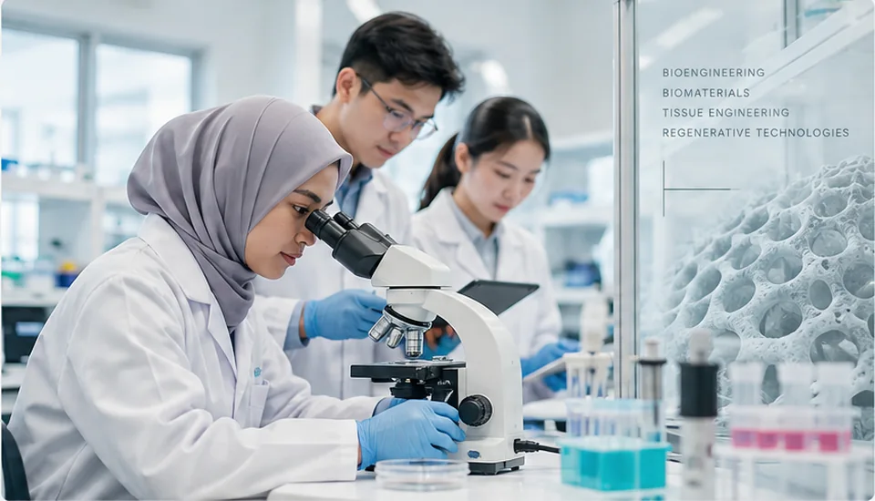
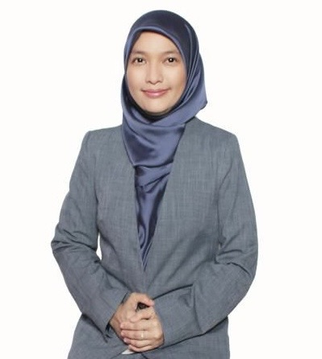

BIRTLAB
Advancing bioprinting, biomaterials, tissue engineering and regenerative technologies through interdisciplinary research, technology development and scientific collaboration.
Research without silos.
Our research interests connect biological questions, materials design, fabrication, validation and translation. The following five themes provide a framework for scientific enquiry and collaboration.
3D Bioprinting
Cell-laden construct fabrication, controlled deposition, geometry design and process optimization.
Bioinks & Biomaterials
Material systems that balance printability, mechanics, biological compatibility and degradation.
Tissue Engineering
Integration of cells, scaffolds, signals and microenvironments toward functional tissue constructs.
Regenerative Technologies
Repair-oriented systems, bioactive strategies and interdisciplinary translational pathways.
Research Intelligence
Data visualization, experiment modelling and future AI-enabled analysis for connected research workflows.
People We Serve.
Connecting scientific knowledge, research capabilities and emerging technologies across academia, healthcare, government and industry. Explore the communities we aim to support through research engagement and collaboration.

Universities & Higher Education
Explore joint research, postgraduate research engagement, interdisciplinary knowledge exchange and academic collaborations with universities, faculties and higher education institutions.
Discuss academic collaboration ↗These categories describe communities BIRT Lab seeks to engage. They do not imply existing contracts, institutional endorsements or confirmed partnerships.
Belong to a community of discovery.
Join researchers, academics, students, clinicians and industry professionals exploring bioengineering, biomaterials, tissue engineering and regenerative technologies. Connect with scientific ideas and future opportunities for knowledge exchange.
Research Frontiers.
Exploring the next questions in regenerative science. These eight emerging directions highlight scientific challenges, technologies and possibilities BIRT Lab is interested in investigating—not claims of completed projects or validated findings.
01Advanced 3D & 4D BioprintingPrecision fabrication
Explore material compatibility, shape change over time, cell viability and reproducibility in complex fabricated structures.
Discuss this research direction ↗02Next-Generation BioinksResponsive materials
Investigate responsive hydrogels, bioactive components, mechanical tuning and the trade-offs between processing and biological performance.
Discuss this research direction ↗03Tissue Engineering & RegenerationLiving tissue systems
Explore vascular support, microenvironment design, matrix formation and measurable indicators of functional regeneration.
Discuss this research direction ↗04Organ-on-Chip & Microphysiological SystemsExperimental models
Consider flow conditions, cell co-culture, physiological relevance and experimental validation of miniature tissue systems.
Discuss this research direction ↗05AI & Computational BioengineeringData-informed research
Explore data quality, explainable models, uncertainty and model-to-experiment feedback loops.
Discuss this research direction ↗06Smart & Biodegradable ScaffoldsAdaptive architectures
Investigate polymer blends, scaffold geometry, mechanical integrity, degradation profiles and controlled bioactivity.
Discuss this research direction ↗07Cellular Therapies & Regenerative MedicineBiological translation
Explore cell-supportive matrices, signalling pathways, characterization and evidence required for translational assessment.
Discuss this research direction ↗08Translational & Clinical TechnologiesFrom laboratory to practice
Consider manufacturing repeatability, preclinical evidence, quality controls and interdisciplinary clinical collaboration.
Discuss this research direction ↗Research frontiers are areas for exploration and scientific dialogue. They do not imply active funded programmes, clinical readiness or established experimental results.
People driving discovery.
Research leadership connects scientific direction, interdisciplinary thinking and collaborative opportunities.

PRINCIPAL RESEARCHERAssociate Professor Dr. Nur Aliana Hidayah Binti Mohamed
BIRT Lab · Independent Research Laboratory
With a background in biomedical sciences, pharmacology and tissue engineering, her research interests include drug delivery systems, biomaterials and bone regeneration.
One research flow.
Instead of decorative cards, the lab is visualized as a continuous scientific pathway. Tap any point to change the pathway narrative.
Functions that feel like research software.
Explore interactive demonstration workspaces for research concepts and digital methods. These are not experimentally validated tools.
BioPrint Studio
Configure a construct, simulate printing and generate demonstration metrics.
Regeneration Predictor
Adjust viability, porosity, bioactivity and culture duration to change a mock regeneration score.
Bioink Explorer
Shift composition and visualize how the material profile changes across four research dimensions.
Scientific Visualisation Studio
Explore interactive 3D scaffold geometry, biomaterials, cell–scaffold interaction, microfluidics and regeneration concepts.
Ask BIRT
A local scripted research assistant demonstrating how lab knowledge could eventually be queried.
Research activity as a living signal.
Illustrative analytics show how management could view research breadth, collaboration potential, maturity and translation pathways once real BIRT Lab data is connected.
From science to impact.
The lab identity can later connect every real project to a common translational pathway.
Discover
Scientific question, unmet need, biological target.
Design
Cells, materials, construct architecture and experimental plan.
Bioprint
Fabrication strategy, process parameters and construct creation.
Validate
Biological, functional and mechanical characterization.
Translate
Collaboration, scale-up, commercialization and clinical relevance.
Start a conversation.
For research enquiries, scientific collaborations, professional participation and general correspondence, reach the BIRT Lab research team directly.
ENGINEER
LIVING SYSTEMS.
Connect with BIRT Lab to explore scientific dialogue, interdisciplinary research and future collaboration opportunities.
CONTACT ↗